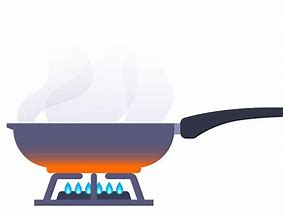
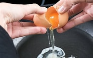
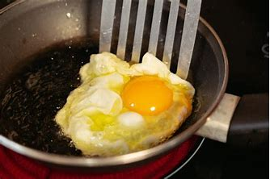

Ingredientes
- 1 huevo
- 1 cucharada de aceite o una pequeña cantidad de mantequilla
- Sal al gusto
Instrucciones
- Calienta el aceite o la mantequilla en una sartén a fuego medio. 
- Rompe el huevo y colócalo en la sartén con cuidado. 
- Deja cocinar el huevo hasta que la clara esté completamente cocida. 
- Añade sal al gusto mientras se cocina.
- Retira el huevo con una espátula y sírvelo caliente.
Para un borde crujiente, cocina a fuego medio-alto durante unos segundos extra.